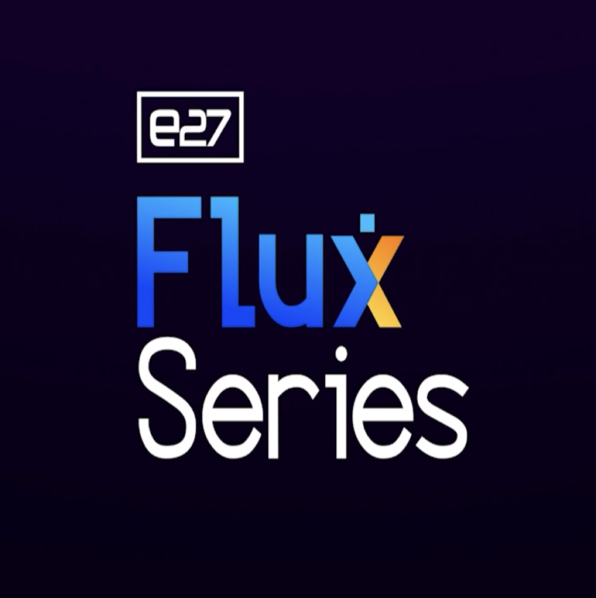
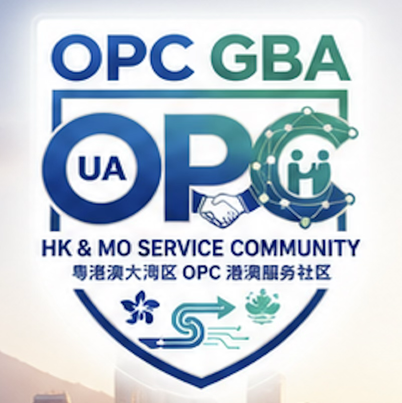

AI services your board can trust
— and your team can operate.
AIBYML SG helps Southeast Asian organisations become AI‑native enterprises, combining governed AI consulting with an enterprise intelligence platform that plans before it builds, records every critical decision, and leaves your team stronger, not dependent.
Based in Singapore, built for ASEAN’s most regulated and trust‑sensitive industries.
Governed AI Process
Full audit trail of significant AI decisions and human reviews.
Enterprise Intelligence
Multi‑agent orchestration, from discovery to delivery.
Capability Transfer
Every project ends with a playbook your team can run.
Featured On


Flooded with tools, lacking control.
Most organisations are flooded with AI tools and vendor promises, but lack three critical things:
- A clear, governed process for designing and deploying AI.
- Visibility into how AI decisions are made on their behalf.
- The internal capability to operate and extend what vendors build.
A single, end‑to‑end governed process.
We combine three core pillars to take you from readiness assessment to production MVPs and long‑term AI capability inside your organisation.
-
1
A Governed AI Consulting Practice
Strategic planning by a business–system paired team.
-
2
An Enterprise Intelligence Platform
Multi-agent orchestration powered by our Open Source/Open Core.
-
3
Structured Capability Transfer
We deploy it with your team, then hand over the keys.
Our Flagship Offers
Structured pathways to transform your organisation into an AI-native enterprise.
AI Readiness & Enterprise Roadmap
3–4 Weeks
Know where AI fits, what to build first, and how to do it safely.
We assess your data, workflows, and governance, then co‑design a 12–18 month roadmap that links concrete AI use cases to business outcomes, policies, and capabilities.
Key Outcomes
- ✓ Clear view of AI value across the org
- ✓ Risk & governance map (PDPA/GDPR)
- ✓ Phased POC/MVP execution plan
Governed AI POC & MVP Builds
4–16 Weeks
Build AI features that work in production — with governance built in.
We deliver POCs and MVPs using our two‑tier operating model. Every engagement includes quality gates, compliance checks, and a full AI Decision Chronicle.
Key Outcomes
- ✓ Working POC or MVP deployment
- ✓ Reconciled business & tech strategy
- ✓ AI Decision Chronicle & quality report
Enterprise Platform & Transfer
Continuous Delivery
Turn AI from a “black box” into an operating system your team can run.
We deploy our orchestration platform with your team, then deliver a structured Capability Transfer Package so your people understand how to run and extend it.
Key Outcomes
- ✓ Live client portal for AI visibility
- ✓ Complete Capability Transfer Package
- ✓ True internal AI operating independence
Our Engagement Lifecycle
A rigorous 7-stage process ensuring governance from discovery to handover.
Inquiry & Scoping
You share your brief; we assess fit, clarify objectives, and propose a focused POC or MVP.
Discovery & Strategy
Business and technical planning run in parallel, then are reconciled into a single, agreed plan.
Planning & Setup
We define scope, sprints, governance rules, and quality metrics before any build starts.
Execution (Build)
A dedicated delivery unit builds, tests, and iterates with quality and compliance gates.
Quality & Review
We review outputs against success criteria, policies, and risk thresholds.
Delivery & Capability Transfer
We deliver the solution plus a Capability Transfer Package so your team can run it.
Post‑Delivery Support
Time‑boxed support to stabilise the solution and plan the next phase.
Why AIBYML SG
Governance-First
Contracts, policies, and technical safeguards aligned by design.
Process > Tools
We plan before we build, and rigorously document every critical decision.
Client Capability
Capability transfer is a mandatory deliverable, not a nice‑to‑have.
ASEAN-Centric
Based in Singapore, tuned for SE Asian regulations, cultures, and markets.
Ready to explore your first governed AI project?
Next step: A 45‑minute AI Readiness Call to identify 1–2 high‑impact, low‑risk starting points for your organization.